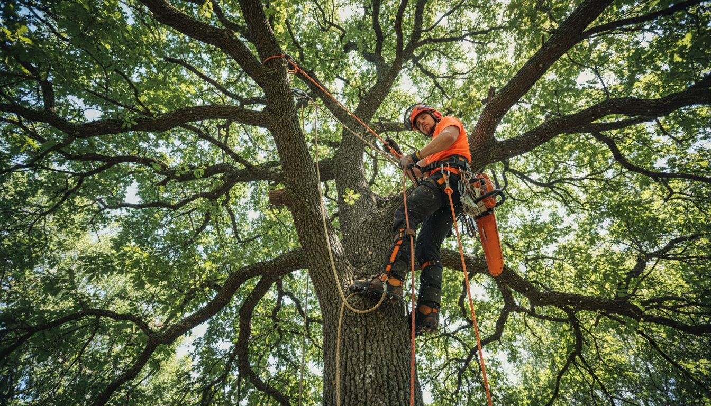
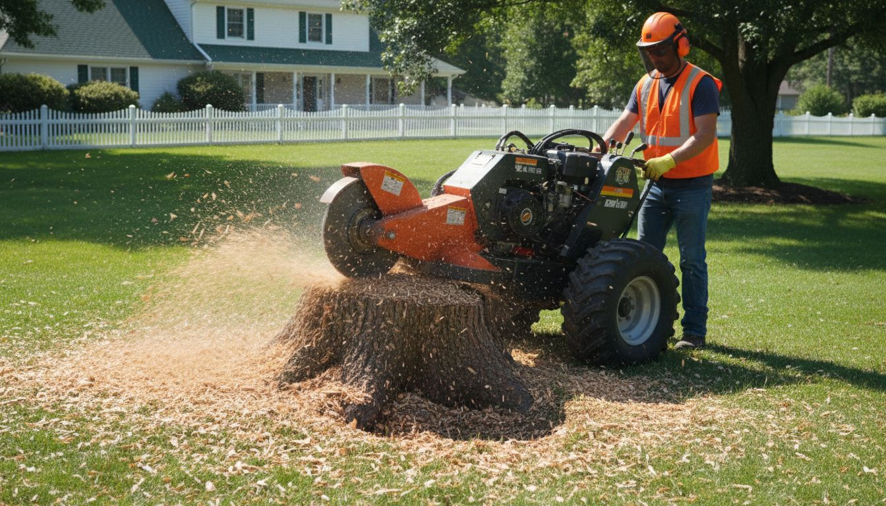

Every homeowner with mature trees on their property will eventually face a difficult decision: when is it time to take one down? Maybe you have noticed a large oak that has not leafed out properly in two years. Perhaps a storm cracked a major limb on the maple near your driveway, and now the whole tree looks unstable. Or it could be that a fast-growing pine has simply outgrown its space and is threatening your foundation or power lines.
Whatever the situation, the question rarely comes down to whether a tree needs to be removed. More often, homeowners wonder about timing. Is there a best season for tree removal? Will it cost less at certain times of year? And are there moments when waiting simply is not an option?
This guide covers everything you need to know about tree removal timing in Virginia, Maryland, and West Virginia. We will walk through the warning signs that signal a tree needs to come down, explain why certain seasons are better for the job, and help you understand what the process looks like from start to finish so there are no surprises.
Signs It’s Time to Remove a Tree
Trees are remarkably resilient organisms, but they do not last forever. Learning to recognize the warning signs of a declining or dangerous tree can protect your property, your family, and your neighbors. Here are the most common indicators that a tree has reached the end of its safe lifespan.
- Dead or dying branches covering more than 50% of the canopy. When the majority of a tree’s crown consists of bare, brittle branches that are not producing leaves, the tree is in serious decline. A healthy tree may lose a limb here or there, but widespread dieback signals root disease, vascular damage, or systemic failure that pruning alone cannot fix.
- A noticeable lean that has gotten progressively worse. Many trees grow at a slight angle naturally, and that is perfectly fine. The concern arises when a tree that was once upright begins leaning more each year, especially if you notice the soil heaving or roots lifting on the opposite side. A shifting lean indicates root failure, and the tree could fall with little warning.
- Significant trunk damage, deep cracks, or hollow cavities. The trunk is a tree’s structural backbone. Vertical cracks, seams, or large areas of missing bark expose the tree to disease and weaken its ability to bear the weight of the canopy. If you can press your hand into a soft, spongy area on the trunk, there is likely internal decay.
- Root damage from nearby construction, grading, or disease. Roots do the invisible work of anchoring a tree and absorbing water. When roots are severed during a construction project, compacted by heavy equipment, or compromised by fungal infections, the tree can decline rapidly over the following one to three years.
- Severe storm damage that has compromised the tree’s structure. After a major storm, some trees can be salvaged with corrective pruning. But if the central leader is snapped, if a large section of the trunk is split, or if more than half the canopy has been torn away, the tree is usually beyond saving and poses an ongoing hazard.
The Best Seasons for Tree Removal
Tree removal can technically be done at any time of year, but certain seasons offer clear advantages in terms of cost, safety, scheduling, and impact on your property. Here is a breakdown of what each season looks like for tree work in our region.
| Season | Rating | Key Benefits | Considerations |
|---|---|---|---|
| Late Fall & Winter | Best | Dormant trees, lower cost, less property damage, easier scheduling | Cold weather; frozen ground can be advantageous |
| Early Spring | Good | Before new growth, good for dead trees, moderate demand | Wet soil may cause some ground impact |
| Summer | Busy | Full canopy makes assessment easy, long daylight hours | Peak demand, higher costs, heat for crew |
| Emergency | Any Time | Immediate hazard mitigation, safety first | Priority scheduling; may cost more due to urgency |
Late Fall and Winter: The Ideal Window
For most non-emergency tree removals in Virginia and the surrounding region, late fall through winter is the ideal time to get the job done. Trees are dormant, meaning less sap flow, lighter canopy weight, and reduced biological stress on surrounding vegetation. The ground tends to be firmer, which means our equipment causes less damage to your lawn. And because demand for tree work typically drops in the colder months, you can often get on the schedule faster and at a more competitive price.
Spring: A Solid Second Choice
Early spring, before trees have fully leafed out, is another strong window for removal. This is an especially good time to take down trees that you identified as dead or dying over the winter. The bare canopy gives arborists excellent visibility, and the moderate weather makes for comfortable, efficient working conditions. Just keep in mind that spring is when the busy season starts ramping up, so booking early is important.
Summer: It Works, but Expect Higher Demand
Summer is our busiest time of year for tree work. Homeowners notice problems more readily when trees are in full leaf, storm season generates emergency calls, and people are generally more active with home improvement projects. While summer removals are absolutely doable, the combination of higher demand, more complex rigging through a full canopy, and heat considerations for the crew can sometimes push costs slightly higher. If you can plan ahead, scheduling for fall or winter is a smarter move financially.
Emergency Situations: Safety Does Not Wait
No matter what the calendar says, there are situations where a tree needs to come down immediately. A tree that has been uprooted in a storm, a trunk that has split and is leaning toward your home, a heavy limb dangling over your child’s play area: these are emergencies that do not care about seasonal timing. Professional tree services offer emergency response for exactly these situations, because waiting for the “right” season is not an option when safety is at stake.
Why Winter Is Often the Best Time
Winter tree removal deserves a closer look because most homeowners assume that outdoor work stops once the temperatures drop. In reality, winter is when many professional tree care companies do some of their best work. Here is why.
The ground is harder, which protects your lawn. Heavy equipment like bucket trucks, cranes, and chippers can weigh tens of thousands of pounds. On soft summer soil, this equipment can leave ruts and compaction damage across your yard. In winter, firmer or frozen ground provides a natural protective layer, meaning far less lawn repair after the job is done.
Bare branches mean better visibility for rigging. When a tree has no leaves, our climbers and ground crew can see the entire branch structure clearly. This makes it easier to plan cuts, set rigging lines, and lower sections safely, especially on trees near houses, fences, or power lines where precision is critical.
Reduced demand means more flexible scheduling. Many people do not think about tree work in January and February, which works in your favor. You are more likely to get your preferred date, and crews can sometimes take on the job more quickly rather than booking weeks out, as is common during the summer rush.
Dormant trees mean less impact on surrounding plants. Removing a large tree during the growing season can shock neighboring plants that have adapted to its shade. In winter, when everything is dormant, the surrounding landscape has time to adjust to the increased sunlight before the growing season begins. Garden beds, shrubs, and adjacent trees all benefit from this gentler transition.
When You Shouldn’t Wait
While planning your tree removal for the optimal season is great advice in most cases, there are specific circumstances where delay is genuinely dangerous. If any of the following conditions apply to a tree on your property, do not put off the call.
- The tree is leaning toward a structure. A house, garage, shed, or fence in the fall zone of a leaning tree is an accident waiting to happen. One strong wind event could turn a nuisance into a catastrophe. The cost of emergency removal after a tree falls through a roof far exceeds the cost of proactive removal.
- Dead limbs are hanging directly over walkways, driveways, or gathering areas. Deadwood falls without warning. A heavy dead branch dropping from 40 feet onto a sidewalk, driveway, or patio represents a serious liability and safety risk, particularly if you have children, guests, or mail carriers on your property regularly.
- Visible fungal growth at the base of the trunk. Mushrooms, conks, or bracket fungi growing at the root flare or lower trunk of a tree almost always indicate significant internal decay. By the time fungal fruiting bodies appear on the outside, the interior structure has often been compromised far more than you might expect.
- The tree has sustained severe storm damage. After a major storm, a partially damaged tree is often more dangerous than one that fell completely. Hanging branches, split trunks, and root-plate lifting all create unpredictable failure risks that can worsen with the next weather event.
What to Expect During Tree Removal
If you have never had a tree professionally removed before, the process can seem intimidating. Understanding each step helps you know what to expect and feel confident that the job will be done safely and thoroughly.
- Free on-site estimate. The process starts with a visit to your property. A certified arborist will assess the tree, evaluate its condition, identify any complications such as proximity to power lines or structures, and provide you with a written estimate. There is no charge and no obligation for this step.
- Planning and safety setup. On the day of removal, the crew arrives and sets up the work zone. This includes establishing a drop zone, positioning equipment, setting up traffic cones or caution tape if needed, and briefing the team on the removal plan. Safety is the foundation of everything that follows.
- Rigging and sectional felling. Most residential tree removals are done in sections rather than felling the whole tree at once. A climber ascends the tree with ropes and harnesses, cutting branches and sections of the trunk in a controlled sequence. Each piece is lowered with ropes or allowed to fall into a clear drop zone. For trees in tight spaces, a crane may be used to lift sections out safely.
- Debris cleanup and hauling. Once the tree is on the ground, the crew processes all the wood and brush. Branches are fed through a commercial chipper, and the trunk sections are either cut into manageable rounds for firewood or loaded onto a truck for disposal. We clean up thoroughly, raking the area and leaving your property looking neat.
- Optional stump grinding. After the tree is removed, you are left with a stump. Most homeowners opt to have it ground out. A stump grinder chews the stump and major surface roots down to 6 to 8 inches below ground level, leaving behind a mix of soil and wood chips that can be filled in and seeded over. This eliminates tripping hazards, prevents regrowth, and gives you usable yard space back.

Cost Factors to Consider
Tree removal pricing varies considerably depending on several factors. While we always provide free, detailed estimates so there are no surprises, understanding what influences the cost can help you plan and budget effectively.
- Tree size and species. A 30-foot ornamental tree is a very different job from a 90-foot hardwood. Taller, thicker trees require more time, more crew, and sometimes specialized equipment like cranes. Hardwoods such as oak and hickory are denser and heavier, which affects the labor involved in rigging and processing.
- Location on your property. A tree standing in the middle of an open yard is straightforward. A tree wedged between your house and your neighbor’s fence, overhanging power lines, or growing through a deck presents significant complexity. Tight-access removals require more careful rigging, more time, and sometimes coordination with utility companies.
- Accessibility for equipment. If a bucket truck or crane can be positioned close to the tree, the work goes faster and more efficiently. If the tree is in a backyard with no gate access, or on a steep hillside, the crew may need to do everything by climbing and hand-carrying debris, which increases the labor involved.
- Time of year. As discussed earlier, winter removals can sometimes be less expensive due to lower demand. Scheduling your non-emergency removal during the off-peak months can offer savings compared to the busy spring and summer season.
- Stump grinding. This is usually an add-on service. Many homeowners bundle it with the tree removal for a discounted rate, but you can always choose to have it done separately or skip it altogether if you prefer.
Choosing the Right Time for Your Tree Removal
To summarize the key takeaways: late fall and winter are typically the best time for planned tree removal in our region, offering advantages in cost, scheduling, property protection, and impact on surrounding plants. Spring is a solid alternative, while summer works but tends to come with higher demand and pricing. And for any situation where safety is a concern, the best time to remove a dangerous tree is right now, regardless of the season.
The most important step you can take is having a professional evaluate the tree in question. An experienced arborist can tell you whether removal is truly necessary, identify any risks you might not have noticed, and recommend the best approach for your specific situation.
If you have a tree on your property that concerns you, whether it is clearly in decline or you are just not sure, we would be happy to come take a look. Miller Tree Experts provides free, no-pressure assessments across Virginia, Maryland, and West Virginia. Give us a call at (540) 313-1306 or fill out our online estimate form, and we will get back to you quickly.